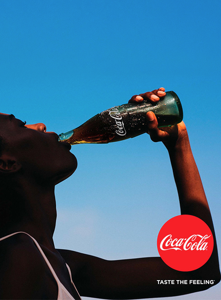

Assaporane il gusto.
Dopo anni di comunicazioni separate, “Taste the Feeling” riesce a ristabilire un’identità unitaria, rendendo più semplice per i consumatori comprendere l’offerta del brand. Il pubblico percepisce nuovamente Coca-Cola come un marchio unico e coerente, capace di adattarsi alle diverse esigenze senza perdere la propria essenza. La centralità del prodotto rafforza inoltre la connessione tra esperienza reale e comunicazione, aumentando il coinvolgimento emotivo. La diffusione globale della campagna, supportata da contenuti visivi e musicali facilmente condivisibili, contribuisce a consolidare la presenza del brand sia nei media tradizionali sia nei canali digitali.
“Taste the Feeling” rappresenta un momento di svolta per Coca-Cola, perché segna il ritorno a una comunicazione centrata sull’unità del brand dopo una fase di frammentazione. La campagna dimostra l’importanza della coerenza strategica, evidenziando come anche un portafoglio prodotti ampio possa essere gestito sotto un’unica identità forte. L’eredità principale della campagna risiede nella capacità di coniugare diversità e unità: le varianti continuano a esistere, ma diventano espressioni di un unico marchio. Allo stesso tempo, il ritorno al prodotto come protagonista segna un equilibrio tra emozione e concretezza, fondamentale nel marketing contemporaneo.
